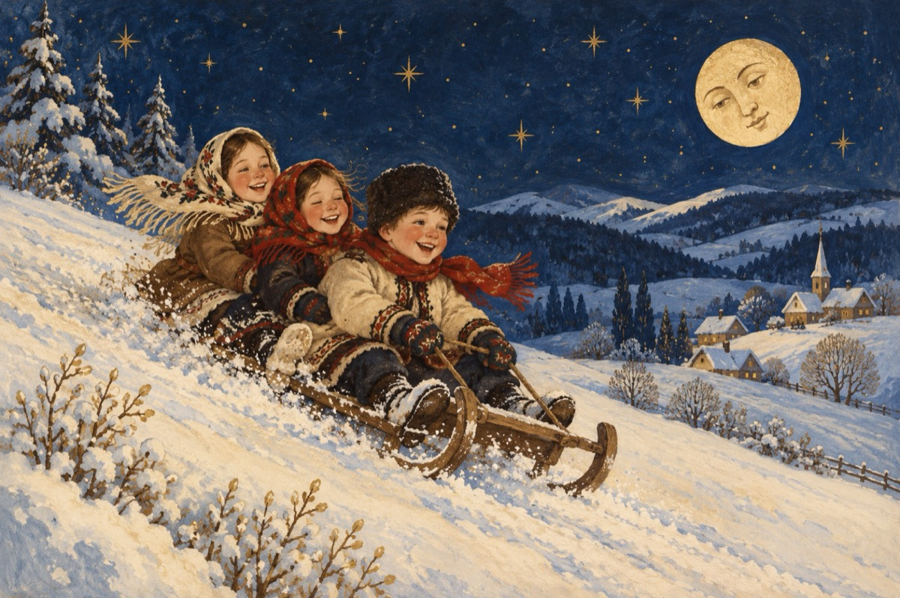

A sosit
Copii vă povesteam deunăzi
Că iarna niciodată nu au mâncat-o lupii
Iată-ne așadar cum ne-am dorit
Împodobind natura mult așteptată, a sosit!
Prilej de joc și bucurie
De azi începe marea veselie
Grâul semănat s-a trezit la viață
Încet, încet spre-nalturi se înalță!
Chiar dacă viscolul ne viscolește
Și drumurile s-au înzăpezit
Așa e iarna, nu-i ca vara, ea ne dă de veste
Și pentru asta din timp ne-am pregătit.
Iar voi copii abia așteptați momentul,
Să coborâți cu săniile la joacă
Pe tobogane să vă luați avântul
Nici vântul nu poate ca să vă oprească!
Vasile Groza